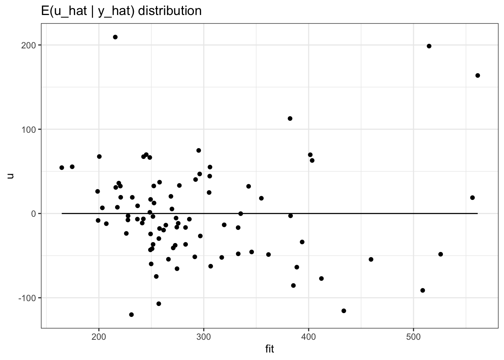
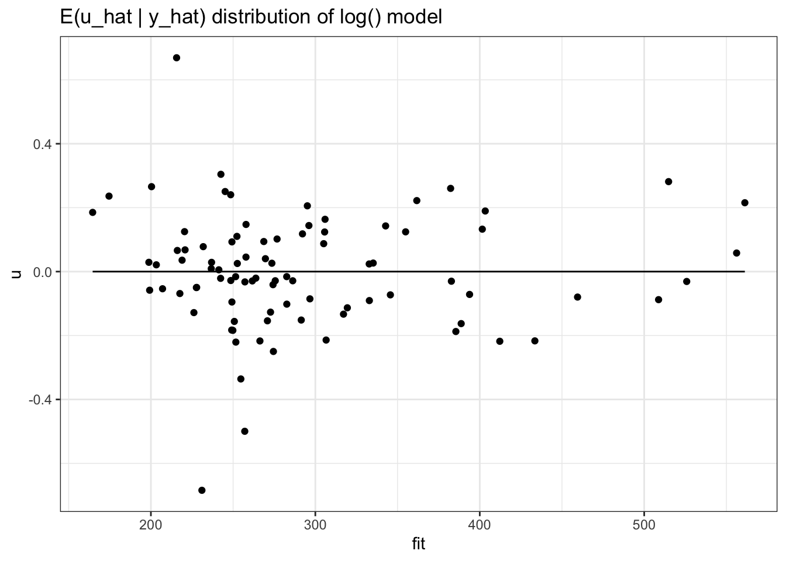

library(wooldridge)
library(tidyverse)
library(stargazer)
library(lmtest)
library(car)
library(sandwich)
softdrink_data <- get(load("softdrink.RData"))
wage1_data <- wage1
hprice1_data <- hprice1
vote1_data <- vote1assignment7
Problem 7.1: Obesity rates (continued)
Caution
Please note that this is a continuation of Problem 6.1 from yesterday’s exercises. I’ve provided my answers for the first ten exercises. You should continue with exercises 7.1.11-7.1.18.
Data from OECD shows that the rate of obesity in Denmark reached \(13.5\%\) in 2010. This corresponds to an increase of approximately \(18\%\) compared to 2005 and a \(150\%\) rise since 1987. This places Denmark below the average level in OECD countries but above the level for comparable countries like Sweden and Norway. The rise in obesity seems to be larger among younger and less educated individuals.
Even though obesity, to a large extent, is thought to be the outcome of an individual decision process, politicians must also consider the impact of these private decisions on society. Extreme obesity is correlated with many lifestyle-related illnesses, and it, therefore, poses a large burden on healthcare systems. More importantly, it impacts society in countries with publicly financed healthcare systems (like Denmark) since obese individuals pay the same to the healthcare system as non-obese individuals that do not have the same healthcare needs. Politicians, therefore, have a direct interest in reducing obesity. Several lifestyle factors seem to have contributed to the obesity epidemic during the last decades: The price of food, especially unhealthy foods, has declined, the amount of sedentary work has increased, and the use of electrical equipment and private cars has expanded.
The political system is searching for ways to reduce the problem. One way to do this is to consider using economic instruments to change people’s lifestyles and reduce, e.g., the consumption of unhealthy foods like soft drinks. The increasing consumption of soft drinks is an essential cause of the increased prevalence of obesity. In this assignment, you will investigate the lifestyle behavior of different household groups regarding soft drink consumption and the potential for politicians to change this behavior by imposing economic (tax) instruments.
Data description
The data set is called softdrink.RData and is available here. It is a subset of a larger data set from the research company GfK ConsumerTracking Scandinavia which covers approximately 2500 consumers that, every week, report their purchase of everyday staples like food for in-house consumption. The respondents select themselves into the panel. The purchases are registered by the household member who is mainly responsible for shopping. The data set covers aggregate food and soft drink expenditures in 2004. The data set also includes household characteristics aggregated into monthly observations. That is, each observation of purchases is from a select week. The data set contains the following variables:
| Variable | Description |
|---|---|
volpers |
volume of soda per person in household |
soft |
\(=1\) if soda has been bought in a given month, 0 otherwise |
price |
average price paid for soda in a month |
totfoodpers |
total food expenditure per person |
age |
age in years for the primary shopper |
single |
\(=1\) if the household consists of a single adult, 0 otherwise |
capital |
\(=1\) if households lives in capital area, 0 otherwise |
urban |
\(=1\) if households lives in urban area, 0 otherwise |
rural |
\(=1\) if households lives in rural area, 0 otherwise |
high_edu |
\(=1\) if primary shopper has a higher education, 0 otherwise |
kid06 |
\(=1\) if there are kids between 0 and 6, 0 otherwise |
kid714 |
\(=1\) if there are kids between 7 and 14, 0 otherwise |
kid1520 |
\(=1\) if there are kids between 15 and 20, 0 otherwise |
Important
Start by loading the data set. Note that the environment is called students and not data. Therefore, I changed the name in the following code snippet:
load("softdrink.RData")
data <- studentsExercises
Please answer the following questions:
- Provide a table with all the variables in the data set. What type of data are we working with? Explain.
Solution
The included data set includes all of the following:
library(stargazer)
stargazer(data,
type = "text",
summary.logical = FALSE,
omit.summary.stat = c("p25", "p75")
)
=======================================================
Statistic N Mean St. Dev. Min Max
-------------------------------------------------------
age 27,316 54.849 14.346 18 98
single 27,316 0.385 0.487 0 1
price 27,316 7.408 2.751 0.595 51.745
soft 27,316 0.508 0.500 0 1
capital 27,316 0.242 0.428 0 1
urban 27,316 0.432 0.495 0 1
rural 27,316 0.325 0.468 0 1
high_edu 27,316 0.215 0.411 0 1
volpers 27,316 0.283 0.558 0.000 16.733
kid06 27,316 0.081 0.273 0 1
kid714 27,316 0.130 0.336 0 1
kid1520 27,316 0.119 0.323 0 1
totfoodpers 27,316 1,042.267 838.306 16.000 13,097.200
-------------------------------------------------------We are working with a cross-sectional data set.
Warning
In an exam situation, I would expect you to provide details of what can be read from the table. The above would not be sufficient for a passing grade. Some things to consider:
- What can we read from the table of descriptive statistics?
- Is there anything that immediately springs to mind?
- What variables are we working with?
- Can we already now infer anything interesting about the problem at hand?*
- What do you think are the main sources of errors in this type of data in relation to soft drink consumption? For instance, what problems may arise as a result of self-selection? Discuss.
Solution
The primary source of error is probably related to households selecting themselves into the panel. This reduces external validity, as we cannot document that the panelists were found by random sampling. For instance, one could imagine that people that want to invest time in documenting their purchasing behavior are probably more likely to also be attentive to their consumption.
Another issue is related to the fact that the data is only on within-household purchases. This implies that consumption outside the household is not necessarily taken into account. Additionally, one could imagine that the purchasing and consumption of soda is something you are relatively more inclined to try hiding, in comparison to fruits or vegetables, for instance. This could lead to possible under-reporting of particular unhealthy habits. This would not be a problem if the under-reporting was random across all groups, but it may be so if it is specific to the consumption of certain food commodities.
We do not know anything about the distribution within the household. Therefore, the consumption of soda is treated as a simple average across all individuals in the partaking household. If we were to consider a household with two adults and one child, where the child is the only consumer of soft drinks, the per-person consumption may not appear that large, even though the child may be drinking excessive amounts of soda.
- Draw and present a histogram of the age distribution for the main shopping responsible. Do you think it is representative of the Danish population?
Solution
library(ggplot2)
ggplot(data, aes(x = age)) +
geom_histogram(aes(y = after_stat(density)), colour = "black", fill = "brown1", alpha = 0.5, bins = 20) +
geom_density(fill = "steelblue4", alpha = 0.5) +
labs(x = "Age", y = "Density", title = "The distribution of age among our sample") +
theme_minimal()When considering that we are not including persons with \(age < 18\), the distribution is somewhat more reasonable. Nevertheless, we still note that the average age appears to be much larger than we would expect. This could be a slight indication of selection bias.
- Calculate the mean consumption for singles with \(age<35\), singles between 35 and 50, singles between 50 and 70, and singles above 70, and the same for couples (in total, eight different conditional sample means).
Solution
We calculate the conditional means using:
mean(data$volpers[data$age < 35 & data$single == 1])[1] 0.3823035mean(data$volpers[35 < data$age & data$age < 50 & data$single == 1])[1] 0.3440869\(\vdots\)
mean(data$volpers[70 < data$age & data$single == 0])[1] 0.2012444- Who are the largest consumers of soft drinks? Is this what you expected?
Solution
It would seem that single persons consume more soda than non-singles. In addition, younger people tend to be consuming relatively more. Given the introduction, this follows our initial expectations. We should note that the fact that singles drink more soda could relate to the problem we discussed initially. A simple average is a poor description of the actual consumption within a given household. This is not the case for singles, as we would assume their purchases go towards their own consumption (at least primarily).
- Calculate the frequency of zero purchases of soft drinks in each of the eight groups and comment on the results in relation to question 3. (Remember that the variable
softis a dummy indicating whether the household purchased soft drinks or not in a given month).
Solution
I calculate the conditional means as:
1 - mean(data$soft[data$age < 35 & data$single == 1])[1] 0.47995141 - mean(data$soft[35 < data$age & data$age < 50 & data$single == 1])[1] 0.4877515\(\vdots\)
1 - mean(data$soft[70 < data$age & data$single == 0])[1] 0.5070856When inspecting the last column of our table, we find that singles, more so than non-singles, purchase no soda at all. The same goes for the different age groups, where higher age seems to imply a higher frequency of zero purchases. This could indicate that singles who consume soda do so in relatively large quantities.
- Now remove all observations that have not purchased any soda. As we assume that the consumption of soft drinks in liters per person is to some extent determined by the price, the age and education of the household member who is mainly responsible for shopping, how much the household spends on food per person, the number of kids in the household, urbanity, and single status, we assume the following model for the population: \[\begin{align*} \log(volpers)&=\beta_0 + \beta_1\log(price) + \beta_2age + \beta_3 age^2 + \beta_4 kid06 + \beta_5 kid714 \\ &+ \beta_6 kid1520 + \beta_7capital + \beta_8 urban + \beta_9 single + \beta_{10} \log(totfoodpers) + u. \end{align*}\] Estimate the model and report your results in equation form, with corresponding standard errors, the number of observations, and \(R^2\).
Solution
We estimate our model:
# Estimation
data <- subset(softdrink_data, volpers > 0)
logModel <- lm(log(volpers) ~ log(price) + age + I(age^2) +
kid06 + kid714 + kid1520 +
capital + urban + single +
log(totfoodpers), data = data)
# Results
stargazer(logModel,
type = "text",
title = "Wage differences",
omit.stat = c("ser", "f", "adj.rsq"),
intercept.bottom = FALSE,
star.cutoffs = c(0.05, 0.01, 0.001)
)
Wage differences
==============================================
Dependent variable:
-----------------------------
log(volpers)
----------------------------------------------
Constant -3.599***
(0.158)
log(price) -0.842***
(0.018)
age 0.046***
(0.004)
I(age2) -0.0005***
(0.00004)
kid06 -0.231***
(0.033)
kid714 -0.280***
(0.025)
kid1520 -0.165***
(0.025)
capital -0.027
(0.022)
urban -0.072***
(0.019)
single 0.154***
(0.018)
log(totfoodpers) 0.458***
(0.014)
----------------------------------------------
Observations 13,867
R2 0.211
==============================================
Note: *p<0.05; **p<0.01; ***p<0.001- Which assumptions do we need to invoke to ensure the unbiasedness of our OLS estimates? Explain.
Solution
Unbiasedness (\(E(\hat{\beta}_j) = \beta_j\)) is ensured under Assumptions MLR. 1 through MLR. 4. Consistency (\(\hat{\beta}_j \rightarrow \beta_j\) as \(n\rightarrow \infty\)) is implied by Assumptions MLR. 1 through MLR. 3 and the weaker MLR. 4’: \[\begin{align} E(u) = 0 \quad \text{and} \quad Cov(x_j, u) = 0. \end{align}\] The latter ensures linear independence, whilst MLR. 4 ensures complete independence. Consistency is, therefore, a weaker property of our estimator than unbiasedness.
Warning
In an exam situation, I would methodically present and discuss the implications of each assumption formally.
- Which assumptions need to hold in order to carry out standard inference (\(t\)-tests and \(F\)-tests)? Why?
Solution
Ideally, we would like the population error term to be independent of the explanatory variables and normally distributed with mean zero and variance \(\sigma^2\), as surmised by Assumption MLR. 6: \(u\sim \mathcal{N}(0, \sigma^2)\). Seeing as this is the strongest assumption we have imposed (by far), we can replace this with the weaker MLR. 5 of conditional homoskedasticity: \[\begin{align} Var(u \mid x_1, x_2, \dotsc, x_k) = \sigma^2, \end{align}\] as this for large enough samples (and if a Central Limit Theorem (CLT) applies) ensures that our \(t\)- and \(F\)-statistics are asymptotically normally distributed. If this is not the case, we cannot carry out standard inference. If heteroskedasticity is persistent, you should use heteroskedasticity-robust standard errors for inference, but these are only valid in sufficiently large samples.
Warning
In an exam situation, I would expect you to spend more time discussing the implications of assuming asymptotic normality. I do not expect you to provide proof of a CLT applying, but you should, at minimum, note that this is a requirement for assuming asymptotic normality.
- Do these assumptions seem reasonable in our model? Reflect on your answer.
Solution
Important problems to note:
- MLR.2: We clearly do not have a random sampling. Instead, you could discuss whether participating in the panel is independent of your day-to-day consumption of soda (or other ways to circumvent this issue).
- MLR.4: You can always discuss the validity of assuming a zero conditional mean. In practice, we would never expect it to be fulfilled entirely. Therefore, a good discussion relates to the data at hand. Is there anything obvious we are missing here that may be important? We can always come up with the argument that it would be convenient to have more (and better) available data, but what would be essential for the validity of your study.
- For both MLR.5 and MLR. 6, we should investigate further as we have specific formal tests or graphical tools that will allow for a better and more thorough discussion.
Less important:
- MLR.3 Either you have perfect collinearity, or you don’t. If this is an issue, you have a fundamental and critical issue, which means you cannot estimate your parameters with OLS. Fix it!
- MLR.1 This is a design question. You are assuming some relationship in the population. Given that the proposed model is linear in its parameters, we have no issues. What you instead could do, is discuss whether the functional form of the proposed model seems valid.
Plot the density of \(volpers\) and \(\log(volpers)\). Based on the two figures, and your general knowledge, discuss what the difference is of using \(\log(volpers)\) as the dependent variable rather than \(volpers\).
volper_dist <- softdrink_data |> filter(soft!=0) |> mutate("log(volpers)" = log(volpers)) |> select(c("volpers", "log(volpers)")) |> pivot_longer(cols = everything(), names_to = "colname", values_to = "value") ggplot(data = volper_dist, mapping = aes(x = value, fill = colname, color = colname)) + geom_density(alpha = 0.5, bw = 0.05) + facet_grid(cols = vars(colname), scales = "free") + labs(title = "volpers and log(volpers) density", fill = "value", color = "value") + theme_bw()From the plot above, we can see that the log() transformation of volpers makes the data distribution closer to the normal distribution which satisfies CLM assumption. In addition it also narrows the range into [-5.0,2.5] instead of [0,15].
Assume that the Classical Linear Model (CLM) assumptions apply. Estimate the proposed model for the population and report your findings in a table. Discuss your results. Are they as you expected?
The model was already calculated on the 7th question.
Calculate a confidence interval for the parameter on single status (
single). How does this compare to your previous results about the significance of this parameter?critical_point <- qt(p = 0.001, df = 13856, lower.tail = FALSE) lower_bound_single = round(0.154 - (critical_point*0.018),3) upper_bound_single = round(0.154 + (critical_point*0.018),3) paste0("lower bound: ", lower_bound_single, " upper bound: ", upper_bound_single)[1] "lower bound: 0.098 upper bound: 0.21"Since we are the single parameter is significance even at 1% level, we calculated the confidence interval for it with 99% confidence interval. Thus, from the above calculation, the value of single parameter would lie on (0.098,0.21) for 99% of the samples. It is consistent since the range does not contain zero.
Test for the joint significance of urbanity (the variables \(urban\) and \(capital\)). Remember to state \(H_0\) and \(H_1\) when testing.
To do that, we will use restricted F-test where the restricted model is the one without urban and capital variables. The hypothesis is:
\[\begin{align*} H_{0} : \beta_{urban} = \beta_{capita} = 0 \\ H_{1} : \beta_{urban} = 0 or \beta_{capita} = 0 \end{align*}\]
In addition, we set the significance level 5%.data <- subset(softdrink_data, volpers > 0) logModel_rest <- lm(log(volpers) ~ log(price) + age + I(age^2) + kid06 + kid714 + kid1520 + single + log(totfoodpers), data = data) anova(logModel, logModel_rest)Analysis of Variance Table Model 1: log(volpers) ~ log(price) + age + I(age^2) + kid06 + kid714 + kid1520 + capital + urban + single + log(totfoodpers) Model 2: log(volpers) ~ log(price) + age + I(age^2) + kid06 + kid714 + kid1520 + single + log(totfoodpers) Res.Df RSS Df Sum of Sq F Pr(>F) 1 13856 12584 2 13858 12598 -2 -13.331 7.3393 0.000652 *** --- Signif. codes: 0 '***' 0.001 '**' 0.01 '*' 0.05 '.' 0.1 ' ' 1anova(logModel_rest, logModel)Analysis of Variance Table Model 1: log(volpers) ~ log(price) + age + I(age^2) + kid06 + kid714 + kid1520 + single + log(totfoodpers) Model 2: log(volpers) ~ log(price) + age + I(age^2) + kid06 + kid714 + kid1520 + capital + urban + single + log(totfoodpers) Res.Df RSS Df Sum of Sq F Pr(>F) 1 13858 12598 2 13856 12584 2 13.331 7.3393 0.000652 *** --- Signif. codes: 0 '***' 0.001 '**' 0.01 '*' 0.05 '.' 0.1 ' ' 1From the restricted F-test above, we can see that the p-values is lesser than our threshold (5%). It is also significance at 1% level. Thus, we can confidently reject the null hypothesis. In conclusion, we can confidently say that either marginal effect of \(urban\) or \(capital\) is not zero and choose to keep the two variables on our model.
Calculate the partial effects of having children of different ages (i.e. \(kid06\), \(kid714\), and \(kid1520\)). Interpret.
The partial effect for having those three groups of children can be calculated, assuming other factors are held fix, by summing each marginal effect of each children age group. Therefore we have (-0.231 - 0.280 - 0.165)*100 = -67.6%.
Problem 7.2
Use the data in wage1 for this exercise.
Using the following hourly wage equation: \[\begin{align*} \widehat{\log(wage)} &=\underset{(.119)}{.389} - \underset{(.168)}{.227}female + \underset{(.008)}{.082} educ \\ &- \underset{(.0131)}{.0056}female\cdot educ + \underset{(.005)}{.029}exper - \underset{(.00011)}{.00058}exper^2 \\ &+ \underset{(.007)}{.032}tenure + \underset{(.00024)}{.00059}tenure^2 \\ n&=526, \quad R^2 = .441 \end{align*}\] Estimate the gender differential in hourly wage when \(educ = 12.5\). Compare this with the estimated differential when \(educ = 0\).
To calculate the difference in gender, the difference between the two is :
\[\begin{align*} diff = -0.227 - 0.0056educ \end{align*}\]
where \(educ = 12.5\), we have:
\[\begin{align*} \%\Delta_{wage} = -0.227 - (0.0056*12.5) \\ = -0.297 = -29.7% \end{align*}\]
where \(educ = 0\), we have:
\[\begin{align*} \%\Delta_{wage} = -0.227 = -22.7% \end{align*}\]
From the calculation above we can see that the additional 12.5 years of education adding the difference of -7%.
Run the regression used to obtain the above estimation, but with \(female\cdot (educ-12.5)\) replacing \(female\cdot educ\). How do you interpret the coefficient on \(female\) now?
wage1_model2 <- lm(data = wage1_data, formula = log(wage) ~ female + educ + I(female*(educ-12.5)) + exper + I(exper^2) + tenure + I(tenure^2)) stargazer(wage1_model2, type = "text", title = "Wage differences with female.(educ-12.5)" )Wage differences with female.(educ-12.5) ===================================================== Dependent variable: --------------------------- log(wage) ----------------------------------------------------- female -0.296*** (0.036) educ 0.082*** (0.008) I(female * (educ - 12.5)) -0.006 (0.013) exper 0.029*** (0.005) I(exper2) -0.001*** (0.0001) tenure 0.032*** (0.007) I(tenure2) -0.001** (0.0002) Constant 0.389*** (0.119) ----------------------------------------------------- Observations 526 R2 0.441 Adjusted R2 0.433 Residual Std. Error 0.400 (df = 518) F Statistic 58.371*** (df = 7; 518) ===================================================== Note: *p<0.1; **p<0.05; ***p<0.01paste0("Mean of education: ", mean(wage1_data$educ))[1] "Mean of education: 12.5627376425856"From the above regression result, the marginal interaction effect of gender on the education average (assuming 12.5 is the average of education, which is true). In conclusion, the gender difference of being female has partial interaction on education average about -0.6%. Then, for female, where we have educ = 12.5, we will have effect of (-0.296 + -0.006*(educ-12.5) ) = -0.296 = -29.6% which is the same as the above difference.
Is the coefficient on \(female\) in part 1 statistically significant? Compare this with the hourly wage equation from 1 and comment.
From the above part 1 the significant level can be calculated (assuming homoskedasticity) where we have \(H_{0}: \beta _{female} = 0\)(two-sided test) :
t_statistic <- (-0.227 - 0 )/0.0131 t_test_result <- 2*pt(q = -abs(t_statistic), df = (526-7-1), lower.tail = TRUE) paste0("T-test result: ", t_test_result)[1] "T-test result: 2.14920914876231e-53"From the result above, we can see that the female coefficient in part 1 is also statistically significant even at 1% significant level. This is also true for the part 2 female coefficient which is also statistically significant even at the same significant level. In conclusion,
Problem 7.3
Use the data in
hprice1to obtain the heteroskedasticity-robust standard errors for equation (8.17). Discuss any important differences with the usual standard errors.To do that, we fit 8.17 population model and use the coeftest from lmtest and car package.
hprice1_model <- lm(data = hprice1_data, formula <- price ~ lotsize + sqrft + bdrms) ggplot(data = data.frame(u = residuals(hprice1_model), fit = fitted(hprice1_model)), mapping = (aes(x = fit, y = u ))) + geom_point() + geom_line(y = 0) + labs(title = "E(u_hat | y_hat) distribution")
theme_bw()List of 97 $ line :List of 6 ..$ colour : chr "black" ..$ linewidth : num 0.5 ..$ linetype : num 1 ..$ lineend : chr "butt" ..$ arrow : logi FALSE ..$ inherit.blank: logi TRUE ..- attr(*, "class")= chr [1:2] "element_line" "element" $ rect :List of 5 ..$ fill : chr "white" ..$ colour : chr "black" ..$ linewidth : num 0.5 ..$ linetype : num 1 ..$ inherit.blank: logi TRUE ..- attr(*, "class")= chr [1:2] "element_rect" "element" $ text :List of 11 ..$ family : chr "" ..$ face : chr "plain" ..$ colour : chr "black" ..$ size : num 11 ..$ hjust : num 0.5 ..$ vjust : num 0.5 ..$ angle : num 0 ..$ lineheight : num 0.9 ..$ margin : 'margin' num [1:4] 0points 0points 0points 0points .. ..- attr(*, "unit")= int 8 ..$ debug : logi FALSE ..$ inherit.blank: logi TRUE ..- attr(*, "class")= chr [1:2] "element_text" "element" $ title : NULL $ aspect.ratio : NULL $ axis.title : NULL $ axis.title.x :List of 11 ..$ family : NULL ..$ face : NULL ..$ colour : NULL ..$ size : NULL ..$ hjust : NULL ..$ vjust : num 1 ..$ angle : NULL ..$ lineheight : NULL ..$ margin : 'margin' num [1:4] 2.75points 0points 0points 0points .. ..- attr(*, "unit")= int 8 ..$ debug : NULL ..$ inherit.blank: logi TRUE ..- attr(*, "class")= chr [1:2] "element_text" "element" $ axis.title.x.top :List of 11 ..$ family : NULL ..$ face : NULL ..$ colour : NULL ..$ size : NULL ..$ hjust : NULL ..$ vjust : num 0 ..$ angle : NULL ..$ lineheight : NULL ..$ margin : 'margin' num [1:4] 0points 0points 2.75points 0points .. ..- attr(*, "unit")= int 8 ..$ debug : NULL ..$ inherit.blank: logi TRUE ..- attr(*, "class")= chr [1:2] "element_text" "element" $ axis.title.x.bottom : NULL $ axis.title.y :List of 11 ..$ family : NULL ..$ face : NULL ..$ colour : NULL ..$ size : NULL ..$ hjust : NULL ..$ vjust : num 1 ..$ angle : num 90 ..$ lineheight : NULL ..$ margin : 'margin' num [1:4] 0points 2.75points 0points 0points .. ..- attr(*, "unit")= int 8 ..$ debug : NULL ..$ inherit.blank: logi TRUE ..- attr(*, "class")= chr [1:2] "element_text" "element" $ axis.title.y.left : NULL $ axis.title.y.right :List of 11 ..$ family : NULL ..$ face : NULL ..$ colour : NULL ..$ size : NULL ..$ hjust : NULL ..$ vjust : num 0 ..$ angle : num -90 ..$ lineheight : NULL ..$ margin : 'margin' num [1:4] 0points 0points 0points 2.75points .. ..- attr(*, "unit")= int 8 ..$ debug : NULL ..$ inherit.blank: logi TRUE ..- attr(*, "class")= chr [1:2] "element_text" "element" $ axis.text :List of 11 ..$ family : NULL ..$ face : NULL ..$ colour : chr "grey30" ..$ size : 'rel' num 0.8 ..$ hjust : NULL ..$ vjust : NULL ..$ angle : NULL ..$ lineheight : NULL ..$ margin : NULL ..$ debug : NULL ..$ inherit.blank: logi TRUE ..- attr(*, "class")= chr [1:2] "element_text" "element" $ axis.text.x :List of 11 ..$ family : NULL ..$ face : NULL ..$ colour : NULL ..$ size : NULL ..$ hjust : NULL ..$ vjust : num 1 ..$ angle : NULL ..$ lineheight : NULL ..$ margin : 'margin' num [1:4] 2.2points 0points 0points 0points .. ..- attr(*, "unit")= int 8 ..$ debug : NULL ..$ inherit.blank: logi TRUE ..- attr(*, "class")= chr [1:2] "element_text" "element" $ axis.text.x.top :List of 11 ..$ family : NULL ..$ face : NULL ..$ colour : NULL ..$ size : NULL ..$ hjust : NULL ..$ vjust : num 0 ..$ angle : NULL ..$ lineheight : NULL ..$ margin : 'margin' num [1:4] 0points 0points 2.2points 0points .. ..- attr(*, "unit")= int 8 ..$ debug : NULL ..$ inherit.blank: logi TRUE ..- attr(*, "class")= chr [1:2] "element_text" "element" $ axis.text.x.bottom : NULL $ axis.text.y :List of 11 ..$ family : NULL ..$ face : NULL ..$ colour : NULL ..$ size : NULL ..$ hjust : num 1 ..$ vjust : NULL ..$ angle : NULL ..$ lineheight : NULL ..$ margin : 'margin' num [1:4] 0points 2.2points 0points 0points .. ..- attr(*, "unit")= int 8 ..$ debug : NULL ..$ inherit.blank: logi TRUE ..- attr(*, "class")= chr [1:2] "element_text" "element" $ axis.text.y.left : NULL $ axis.text.y.right :List of 11 ..$ family : NULL ..$ face : NULL ..$ colour : NULL ..$ size : NULL ..$ hjust : num 0 ..$ vjust : NULL ..$ angle : NULL ..$ lineheight : NULL ..$ margin : 'margin' num [1:4] 0points 0points 0points 2.2points .. ..- attr(*, "unit")= int 8 ..$ debug : NULL ..$ inherit.blank: logi TRUE ..- attr(*, "class")= chr [1:2] "element_text" "element" $ axis.ticks :List of 6 ..$ colour : chr "grey20" ..$ linewidth : NULL ..$ linetype : NULL ..$ lineend : NULL ..$ arrow : logi FALSE ..$ inherit.blank: logi TRUE ..- attr(*, "class")= chr [1:2] "element_line" "element" $ axis.ticks.x : NULL $ axis.ticks.x.top : NULL $ axis.ticks.x.bottom : NULL $ axis.ticks.y : NULL $ axis.ticks.y.left : NULL $ axis.ticks.y.right : NULL $ axis.ticks.length : 'simpleUnit' num 2.75points ..- attr(*, "unit")= int 8 $ axis.ticks.length.x : NULL $ axis.ticks.length.x.top : NULL $ axis.ticks.length.x.bottom: NULL $ axis.ticks.length.y : NULL $ axis.ticks.length.y.left : NULL $ axis.ticks.length.y.right : NULL $ axis.line : list() ..- attr(*, "class")= chr [1:2] "element_blank" "element" $ axis.line.x : NULL $ axis.line.x.top : NULL $ axis.line.x.bottom : NULL $ axis.line.y : NULL $ axis.line.y.left : NULL $ axis.line.y.right : NULL $ legend.background :List of 5 ..$ fill : NULL ..$ colour : logi NA ..$ linewidth : NULL ..$ linetype : NULL ..$ inherit.blank: logi TRUE ..- attr(*, "class")= chr [1:2] "element_rect" "element" $ legend.margin : 'margin' num [1:4] 5.5points 5.5points 5.5points 5.5points ..- attr(*, "unit")= int 8 $ legend.spacing : 'simpleUnit' num 11points ..- attr(*, "unit")= int 8 $ legend.spacing.x : NULL $ legend.spacing.y : NULL $ legend.key :List of 5 ..$ fill : chr "white" ..$ colour : logi NA ..$ linewidth : NULL ..$ linetype : NULL ..$ inherit.blank: logi TRUE ..- attr(*, "class")= chr [1:2] "element_rect" "element" $ legend.key.size : 'simpleUnit' num 1.2lines ..- attr(*, "unit")= int 3 $ legend.key.height : NULL $ legend.key.width : NULL $ legend.text :List of 11 ..$ family : NULL ..$ face : NULL ..$ colour : NULL ..$ size : 'rel' num 0.8 ..$ hjust : NULL ..$ vjust : NULL ..$ angle : NULL ..$ lineheight : NULL ..$ margin : NULL ..$ debug : NULL ..$ inherit.blank: logi TRUE ..- attr(*, "class")= chr [1:2] "element_text" "element" $ legend.text.align : NULL $ legend.title :List of 11 ..$ family : NULL ..$ face : NULL ..$ colour : NULL ..$ size : NULL ..$ hjust : num 0 ..$ vjust : NULL ..$ angle : NULL ..$ lineheight : NULL ..$ margin : NULL ..$ debug : NULL ..$ inherit.blank: logi TRUE ..- attr(*, "class")= chr [1:2] "element_text" "element" $ legend.title.align : NULL $ legend.position : chr "right" $ legend.direction : NULL $ legend.justification : chr "center" $ legend.box : NULL $ legend.box.just : NULL $ legend.box.margin : 'margin' num [1:4] 0cm 0cm 0cm 0cm ..- attr(*, "unit")= int 1 $ legend.box.background : list() ..- attr(*, "class")= chr [1:2] "element_blank" "element" $ legend.box.spacing : 'simpleUnit' num 11points ..- attr(*, "unit")= int 8 $ panel.background :List of 5 ..$ fill : chr "white" ..$ colour : logi NA ..$ linewidth : NULL ..$ linetype : NULL ..$ inherit.blank: logi TRUE ..- attr(*, "class")= chr [1:2] "element_rect" "element" $ panel.border :List of 5 ..$ fill : logi NA ..$ colour : chr "grey20" ..$ linewidth : NULL ..$ linetype : NULL ..$ inherit.blank: logi TRUE ..- attr(*, "class")= chr [1:2] "element_rect" "element" $ panel.spacing : 'simpleUnit' num 5.5points ..- attr(*, "unit")= int 8 $ panel.spacing.x : NULL $ panel.spacing.y : NULL $ panel.grid :List of 6 ..$ colour : chr "grey92" ..$ linewidth : NULL ..$ linetype : NULL ..$ lineend : NULL ..$ arrow : logi FALSE ..$ inherit.blank: logi TRUE ..- attr(*, "class")= chr [1:2] "element_line" "element" $ panel.grid.major : NULL $ panel.grid.minor :List of 6 ..$ colour : NULL ..$ linewidth : 'rel' num 0.5 ..$ linetype : NULL ..$ lineend : NULL ..$ arrow : logi FALSE ..$ inherit.blank: logi TRUE ..- attr(*, "class")= chr [1:2] "element_line" "element" $ panel.grid.major.x : NULL $ panel.grid.major.y : NULL $ panel.grid.minor.x : NULL $ panel.grid.minor.y : NULL $ panel.ontop : logi FALSE $ plot.background :List of 5 ..$ fill : NULL ..$ colour : chr "white" ..$ linewidth : NULL ..$ linetype : NULL ..$ inherit.blank: logi TRUE ..- attr(*, "class")= chr [1:2] "element_rect" "element" $ plot.title :List of 11 ..$ family : NULL ..$ face : NULL ..$ colour : NULL ..$ size : 'rel' num 1.2 ..$ hjust : num 0 ..$ vjust : num 1 ..$ angle : NULL ..$ lineheight : NULL ..$ margin : 'margin' num [1:4] 0points 0points 5.5points 0points .. ..- attr(*, "unit")= int 8 ..$ debug : NULL ..$ inherit.blank: logi TRUE ..- attr(*, "class")= chr [1:2] "element_text" "element" $ plot.title.position : chr "panel" $ plot.subtitle :List of 11 ..$ family : NULL ..$ face : NULL ..$ colour : NULL ..$ size : NULL ..$ hjust : num 0 ..$ vjust : num 1 ..$ angle : NULL ..$ lineheight : NULL ..$ margin : 'margin' num [1:4] 0points 0points 5.5points 0points .. ..- attr(*, "unit")= int 8 ..$ debug : NULL ..$ inherit.blank: logi TRUE ..- attr(*, "class")= chr [1:2] "element_text" "element" $ plot.caption :List of 11 ..$ family : NULL ..$ face : NULL ..$ colour : NULL ..$ size : 'rel' num 0.8 ..$ hjust : num 1 ..$ vjust : num 1 ..$ angle : NULL ..$ lineheight : NULL ..$ margin : 'margin' num [1:4] 5.5points 0points 0points 0points .. ..- attr(*, "unit")= int 8 ..$ debug : NULL ..$ inherit.blank: logi TRUE ..- attr(*, "class")= chr [1:2] "element_text" "element" $ plot.caption.position : chr "panel" $ plot.tag :List of 11 ..$ family : NULL ..$ face : NULL ..$ colour : NULL ..$ size : 'rel' num 1.2 ..$ hjust : num 0.5 ..$ vjust : num 0.5 ..$ angle : NULL ..$ lineheight : NULL ..$ margin : NULL ..$ debug : NULL ..$ inherit.blank: logi TRUE ..- attr(*, "class")= chr [1:2] "element_text" "element" $ plot.tag.position : chr "topleft" $ plot.margin : 'margin' num [1:4] 5.5points 5.5points 5.5points 5.5points ..- attr(*, "unit")= int 8 $ strip.background :List of 5 ..$ fill : chr "grey85" ..$ colour : chr "grey20" ..$ linewidth : NULL ..$ linetype : NULL ..$ inherit.blank: logi TRUE ..- attr(*, "class")= chr [1:2] "element_rect" "element" $ strip.background.x : NULL $ strip.background.y : NULL $ strip.clip : chr "inherit" $ strip.placement : chr "inside" $ strip.text :List of 11 ..$ family : NULL ..$ face : NULL ..$ colour : chr "grey10" ..$ size : 'rel' num 0.8 ..$ hjust : NULL ..$ vjust : NULL ..$ angle : NULL ..$ lineheight : NULL ..$ margin : 'margin' num [1:4] 4.4points 4.4points 4.4points 4.4points .. ..- attr(*, "unit")= int 8 ..$ debug : NULL ..$ inherit.blank: logi TRUE ..- attr(*, "class")= chr [1:2] "element_text" "element" $ strip.text.x : NULL $ strip.text.x.bottom : NULL $ strip.text.x.top : NULL $ strip.text.y :List of 11 ..$ family : NULL ..$ face : NULL ..$ colour : NULL ..$ size : NULL ..$ hjust : NULL ..$ vjust : NULL ..$ angle : num -90 ..$ lineheight : NULL ..$ margin : NULL ..$ debug : NULL ..$ inherit.blank: logi TRUE ..- attr(*, "class")= chr [1:2] "element_text" "element" $ strip.text.y.left :List of 11 ..$ family : NULL ..$ face : NULL ..$ colour : NULL ..$ size : NULL ..$ hjust : NULL ..$ vjust : NULL ..$ angle : num 90 ..$ lineheight : NULL ..$ margin : NULL ..$ debug : NULL ..$ inherit.blank: logi TRUE ..- attr(*, "class")= chr [1:2] "element_text" "element" $ strip.text.y.right : NULL $ strip.switch.pad.grid : 'simpleUnit' num 2.75points ..- attr(*, "unit")= int 8 $ strip.switch.pad.wrap : 'simpleUnit' num 2.75points ..- attr(*, "unit")= int 8 - attr(*, "class")= chr [1:2] "theme" "gg" - attr(*, "complete")= logi TRUE - attr(*, "validate")= logi TRUE# Calculate robust se's cov1 = vcovHC(hprice1_model, type = "HC1") robust_se = sqrt(diag(cov1)) coeftest(hprice1_model, vcov = hccm)t test of coefficients: Estimate Std. Error t value Pr(>|t|) (Intercept) -21.7703081 41.0326943 -0.5306 0.597124 lotsize 0.0020677 0.0071485 0.2893 0.773101 sqrft 0.1227782 0.0407325 3.0143 0.003406 ** bdrms 13.8525217 11.5617901 1.1981 0.234236 --- Signif. codes: 0 '***' 0.001 '**' 0.01 '*' 0.05 '.' 0.1 ' ' 1As we see from the result above, the heteroskedasticity-robust standard error tends to have larger value. This makes sense since if heteroskedasticity is there on the data, we are having stricter requirement on our estimation. This implies that we are having lesser significant variable which is only the sqrft at 1% level.
Repeat part 1 for equation (8.18).
hprice1_model2 <- lm(data = hprice1_data, formula <- log(price) ~ log(lotsize) + log(sqrft) + bdrms) ggplot(data = data.frame(u = residuals(hprice1_model2), fit = fitted(hprice1_model)), mapping = (aes(x = fit, y = u ))) + geom_point() + geom_line(y = 0) + labs(title = "E(u_hat | y_hat) distribution of log() model")
theme_bw()List of 97 $ line :List of 6 ..$ colour : chr "black" ..$ linewidth : num 0.5 ..$ linetype : num 1 ..$ lineend : chr "butt" ..$ arrow : logi FALSE ..$ inherit.blank: logi TRUE ..- attr(*, "class")= chr [1:2] "element_line" "element" $ rect :List of 5 ..$ fill : chr "white" ..$ colour : chr "black" ..$ linewidth : num 0.5 ..$ linetype : num 1 ..$ inherit.blank: logi TRUE ..- attr(*, "class")= chr [1:2] "element_rect" "element" $ text :List of 11 ..$ family : chr "" ..$ face : chr "plain" ..$ colour : chr "black" ..$ size : num 11 ..$ hjust : num 0.5 ..$ vjust : num 0.5 ..$ angle : num 0 ..$ lineheight : num 0.9 ..$ margin : 'margin' num [1:4] 0points 0points 0points 0points .. ..- attr(*, "unit")= int 8 ..$ debug : logi FALSE ..$ inherit.blank: logi TRUE ..- attr(*, "class")= chr [1:2] "element_text" "element" $ title : NULL $ aspect.ratio : NULL $ axis.title : NULL $ axis.title.x :List of 11 ..$ family : NULL ..$ face : NULL ..$ colour : NULL ..$ size : NULL ..$ hjust : NULL ..$ vjust : num 1 ..$ angle : NULL ..$ lineheight : NULL ..$ margin : 'margin' num [1:4] 2.75points 0points 0points 0points .. ..- attr(*, "unit")= int 8 ..$ debug : NULL ..$ inherit.blank: logi TRUE ..- attr(*, "class")= chr [1:2] "element_text" "element" $ axis.title.x.top :List of 11 ..$ family : NULL ..$ face : NULL ..$ colour : NULL ..$ size : NULL ..$ hjust : NULL ..$ vjust : num 0 ..$ angle : NULL ..$ lineheight : NULL ..$ margin : 'margin' num [1:4] 0points 0points 2.75points 0points .. ..- attr(*, "unit")= int 8 ..$ debug : NULL ..$ inherit.blank: logi TRUE ..- attr(*, "class")= chr [1:2] "element_text" "element" $ axis.title.x.bottom : NULL $ axis.title.y :List of 11 ..$ family : NULL ..$ face : NULL ..$ colour : NULL ..$ size : NULL ..$ hjust : NULL ..$ vjust : num 1 ..$ angle : num 90 ..$ lineheight : NULL ..$ margin : 'margin' num [1:4] 0points 2.75points 0points 0points .. ..- attr(*, "unit")= int 8 ..$ debug : NULL ..$ inherit.blank: logi TRUE ..- attr(*, "class")= chr [1:2] "element_text" "element" $ axis.title.y.left : NULL $ axis.title.y.right :List of 11 ..$ family : NULL ..$ face : NULL ..$ colour : NULL ..$ size : NULL ..$ hjust : NULL ..$ vjust : num 0 ..$ angle : num -90 ..$ lineheight : NULL ..$ margin : 'margin' num [1:4] 0points 0points 0points 2.75points .. ..- attr(*, "unit")= int 8 ..$ debug : NULL ..$ inherit.blank: logi TRUE ..- attr(*, "class")= chr [1:2] "element_text" "element" $ axis.text :List of 11 ..$ family : NULL ..$ face : NULL ..$ colour : chr "grey30" ..$ size : 'rel' num 0.8 ..$ hjust : NULL ..$ vjust : NULL ..$ angle : NULL ..$ lineheight : NULL ..$ margin : NULL ..$ debug : NULL ..$ inherit.blank: logi TRUE ..- attr(*, "class")= chr [1:2] "element_text" "element" $ axis.text.x :List of 11 ..$ family : NULL ..$ face : NULL ..$ colour : NULL ..$ size : NULL ..$ hjust : NULL ..$ vjust : num 1 ..$ angle : NULL ..$ lineheight : NULL ..$ margin : 'margin' num [1:4] 2.2points 0points 0points 0points .. ..- attr(*, "unit")= int 8 ..$ debug : NULL ..$ inherit.blank: logi TRUE ..- attr(*, "class")= chr [1:2] "element_text" "element" $ axis.text.x.top :List of 11 ..$ family : NULL ..$ face : NULL ..$ colour : NULL ..$ size : NULL ..$ hjust : NULL ..$ vjust : num 0 ..$ angle : NULL ..$ lineheight : NULL ..$ margin : 'margin' num [1:4] 0points 0points 2.2points 0points .. ..- attr(*, "unit")= int 8 ..$ debug : NULL ..$ inherit.blank: logi TRUE ..- attr(*, "class")= chr [1:2] "element_text" "element" $ axis.text.x.bottom : NULL $ axis.text.y :List of 11 ..$ family : NULL ..$ face : NULL ..$ colour : NULL ..$ size : NULL ..$ hjust : num 1 ..$ vjust : NULL ..$ angle : NULL ..$ lineheight : NULL ..$ margin : 'margin' num [1:4] 0points 2.2points 0points 0points .. ..- attr(*, "unit")= int 8 ..$ debug : NULL ..$ inherit.blank: logi TRUE ..- attr(*, "class")= chr [1:2] "element_text" "element" $ axis.text.y.left : NULL $ axis.text.y.right :List of 11 ..$ family : NULL ..$ face : NULL ..$ colour : NULL ..$ size : NULL ..$ hjust : num 0 ..$ vjust : NULL ..$ angle : NULL ..$ lineheight : NULL ..$ margin : 'margin' num [1:4] 0points 0points 0points 2.2points .. ..- attr(*, "unit")= int 8 ..$ debug : NULL ..$ inherit.blank: logi TRUE ..- attr(*, "class")= chr [1:2] "element_text" "element" $ axis.ticks :List of 6 ..$ colour : chr "grey20" ..$ linewidth : NULL ..$ linetype : NULL ..$ lineend : NULL ..$ arrow : logi FALSE ..$ inherit.blank: logi TRUE ..- attr(*, "class")= chr [1:2] "element_line" "element" $ axis.ticks.x : NULL $ axis.ticks.x.top : NULL $ axis.ticks.x.bottom : NULL $ axis.ticks.y : NULL $ axis.ticks.y.left : NULL $ axis.ticks.y.right : NULL $ axis.ticks.length : 'simpleUnit' num 2.75points ..- attr(*, "unit")= int 8 $ axis.ticks.length.x : NULL $ axis.ticks.length.x.top : NULL $ axis.ticks.length.x.bottom: NULL $ axis.ticks.length.y : NULL $ axis.ticks.length.y.left : NULL $ axis.ticks.length.y.right : NULL $ axis.line : list() ..- attr(*, "class")= chr [1:2] "element_blank" "element" $ axis.line.x : NULL $ axis.line.x.top : NULL $ axis.line.x.bottom : NULL $ axis.line.y : NULL $ axis.line.y.left : NULL $ axis.line.y.right : NULL $ legend.background :List of 5 ..$ fill : NULL ..$ colour : logi NA ..$ linewidth : NULL ..$ linetype : NULL ..$ inherit.blank: logi TRUE ..- attr(*, "class")= chr [1:2] "element_rect" "element" $ legend.margin : 'margin' num [1:4] 5.5points 5.5points 5.5points 5.5points ..- attr(*, "unit")= int 8 $ legend.spacing : 'simpleUnit' num 11points ..- attr(*, "unit")= int 8 $ legend.spacing.x : NULL $ legend.spacing.y : NULL $ legend.key :List of 5 ..$ fill : chr "white" ..$ colour : logi NA ..$ linewidth : NULL ..$ linetype : NULL ..$ inherit.blank: logi TRUE ..- attr(*, "class")= chr [1:2] "element_rect" "element" $ legend.key.size : 'simpleUnit' num 1.2lines ..- attr(*, "unit")= int 3 $ legend.key.height : NULL $ legend.key.width : NULL $ legend.text :List of 11 ..$ family : NULL ..$ face : NULL ..$ colour : NULL ..$ size : 'rel' num 0.8 ..$ hjust : NULL ..$ vjust : NULL ..$ angle : NULL ..$ lineheight : NULL ..$ margin : NULL ..$ debug : NULL ..$ inherit.blank: logi TRUE ..- attr(*, "class")= chr [1:2] "element_text" "element" $ legend.text.align : NULL $ legend.title :List of 11 ..$ family : NULL ..$ face : NULL ..$ colour : NULL ..$ size : NULL ..$ hjust : num 0 ..$ vjust : NULL ..$ angle : NULL ..$ lineheight : NULL ..$ margin : NULL ..$ debug : NULL ..$ inherit.blank: logi TRUE ..- attr(*, "class")= chr [1:2] "element_text" "element" $ legend.title.align : NULL $ legend.position : chr "right" $ legend.direction : NULL $ legend.justification : chr "center" $ legend.box : NULL $ legend.box.just : NULL $ legend.box.margin : 'margin' num [1:4] 0cm 0cm 0cm 0cm ..- attr(*, "unit")= int 1 $ legend.box.background : list() ..- attr(*, "class")= chr [1:2] "element_blank" "element" $ legend.box.spacing : 'simpleUnit' num 11points ..- attr(*, "unit")= int 8 $ panel.background :List of 5 ..$ fill : chr "white" ..$ colour : logi NA ..$ linewidth : NULL ..$ linetype : NULL ..$ inherit.blank: logi TRUE ..- attr(*, "class")= chr [1:2] "element_rect" "element" $ panel.border :List of 5 ..$ fill : logi NA ..$ colour : chr "grey20" ..$ linewidth : NULL ..$ linetype : NULL ..$ inherit.blank: logi TRUE ..- attr(*, "class")= chr [1:2] "element_rect" "element" $ panel.spacing : 'simpleUnit' num 5.5points ..- attr(*, "unit")= int 8 $ panel.spacing.x : NULL $ panel.spacing.y : NULL $ panel.grid :List of 6 ..$ colour : chr "grey92" ..$ linewidth : NULL ..$ linetype : NULL ..$ lineend : NULL ..$ arrow : logi FALSE ..$ inherit.blank: logi TRUE ..- attr(*, "class")= chr [1:2] "element_line" "element" $ panel.grid.major : NULL $ panel.grid.minor :List of 6 ..$ colour : NULL ..$ linewidth : 'rel' num 0.5 ..$ linetype : NULL ..$ lineend : NULL ..$ arrow : logi FALSE ..$ inherit.blank: logi TRUE ..- attr(*, "class")= chr [1:2] "element_line" "element" $ panel.grid.major.x : NULL $ panel.grid.major.y : NULL $ panel.grid.minor.x : NULL $ panel.grid.minor.y : NULL $ panel.ontop : logi FALSE $ plot.background :List of 5 ..$ fill : NULL ..$ colour : chr "white" ..$ linewidth : NULL ..$ linetype : NULL ..$ inherit.blank: logi TRUE ..- attr(*, "class")= chr [1:2] "element_rect" "element" $ plot.title :List of 11 ..$ family : NULL ..$ face : NULL ..$ colour : NULL ..$ size : 'rel' num 1.2 ..$ hjust : num 0 ..$ vjust : num 1 ..$ angle : NULL ..$ lineheight : NULL ..$ margin : 'margin' num [1:4] 0points 0points 5.5points 0points .. ..- attr(*, "unit")= int 8 ..$ debug : NULL ..$ inherit.blank: logi TRUE ..- attr(*, "class")= chr [1:2] "element_text" "element" $ plot.title.position : chr "panel" $ plot.subtitle :List of 11 ..$ family : NULL ..$ face : NULL ..$ colour : NULL ..$ size : NULL ..$ hjust : num 0 ..$ vjust : num 1 ..$ angle : NULL ..$ lineheight : NULL ..$ margin : 'margin' num [1:4] 0points 0points 5.5points 0points .. ..- attr(*, "unit")= int 8 ..$ debug : NULL ..$ inherit.blank: logi TRUE ..- attr(*, "class")= chr [1:2] "element_text" "element" $ plot.caption :List of 11 ..$ family : NULL ..$ face : NULL ..$ colour : NULL ..$ size : 'rel' num 0.8 ..$ hjust : num 1 ..$ vjust : num 1 ..$ angle : NULL ..$ lineheight : NULL ..$ margin : 'margin' num [1:4] 5.5points 0points 0points 0points .. ..- attr(*, "unit")= int 8 ..$ debug : NULL ..$ inherit.blank: logi TRUE ..- attr(*, "class")= chr [1:2] "element_text" "element" $ plot.caption.position : chr "panel" $ plot.tag :List of 11 ..$ family : NULL ..$ face : NULL ..$ colour : NULL ..$ size : 'rel' num 1.2 ..$ hjust : num 0.5 ..$ vjust : num 0.5 ..$ angle : NULL ..$ lineheight : NULL ..$ margin : NULL ..$ debug : NULL ..$ inherit.blank: logi TRUE ..- attr(*, "class")= chr [1:2] "element_text" "element" $ plot.tag.position : chr "topleft" $ plot.margin : 'margin' num [1:4] 5.5points 5.5points 5.5points 5.5points ..- attr(*, "unit")= int 8 $ strip.background :List of 5 ..$ fill : chr "grey85" ..$ colour : chr "grey20" ..$ linewidth : NULL ..$ linetype : NULL ..$ inherit.blank: logi TRUE ..- attr(*, "class")= chr [1:2] "element_rect" "element" $ strip.background.x : NULL $ strip.background.y : NULL $ strip.clip : chr "inherit" $ strip.placement : chr "inside" $ strip.text :List of 11 ..$ family : NULL ..$ face : NULL ..$ colour : chr "grey10" ..$ size : 'rel' num 0.8 ..$ hjust : NULL ..$ vjust : NULL ..$ angle : NULL ..$ lineheight : NULL ..$ margin : 'margin' num [1:4] 4.4points 4.4points 4.4points 4.4points .. ..- attr(*, "unit")= int 8 ..$ debug : NULL ..$ inherit.blank: logi TRUE ..- attr(*, "class")= chr [1:2] "element_text" "element" $ strip.text.x : NULL $ strip.text.x.bottom : NULL $ strip.text.x.top : NULL $ strip.text.y :List of 11 ..$ family : NULL ..$ face : NULL ..$ colour : NULL ..$ size : NULL ..$ hjust : NULL ..$ vjust : NULL ..$ angle : num -90 ..$ lineheight : NULL ..$ margin : NULL ..$ debug : NULL ..$ inherit.blank: logi TRUE ..- attr(*, "class")= chr [1:2] "element_text" "element" $ strip.text.y.left :List of 11 ..$ family : NULL ..$ face : NULL ..$ colour : NULL ..$ size : NULL ..$ hjust : NULL ..$ vjust : NULL ..$ angle : num 90 ..$ lineheight : NULL ..$ margin : NULL ..$ debug : NULL ..$ inherit.blank: logi TRUE ..- attr(*, "class")= chr [1:2] "element_text" "element" $ strip.text.y.right : NULL $ strip.switch.pad.grid : 'simpleUnit' num 2.75points ..- attr(*, "unit")= int 8 $ strip.switch.pad.wrap : 'simpleUnit' num 2.75points ..- attr(*, "unit")= int 8 - attr(*, "class")= chr [1:2] "theme" "gg" - attr(*, "complete")= logi TRUE - attr(*, "validate")= logi TRUE# Calculate robust se's cov1 = vcovHC(hprice1_model2, type = "HC1") robust_se = sqrt(diag(cov1)) stargazer(hprice1_model2, hprice1_model2, type = "text", se = list(NULL, robust_se), # setting to robust se title = "The wage equation", omit.stat = c("ser", "F", "adj.rsq"), intercept.bottom = FALSE, dep.var.labels.include = FALSE )The wage equation ========================================= Dependent variable: ---------------------------- (1) (2) ----------------------------------------- Constant -1.297** -1.297* (0.651) (0.781) log(lotsize) 0.168*** 0.168*** (0.038) (0.041) log(sqrft) 0.700*** 0.700*** (0.093) (0.104) bdrms 0.037 0.037 (0.028) (0.031) ----------------------------------------- Observations 88 88 R2 0.643 0.643 ========================================= Note: *p<0.1; **p<0.05; ***p<0.01What does this example suggest about heteroskedasticity and the transformation used for the dependent variable?
Those two fitted model above tells use that having log() transformation will make our variance is not as extreme as before hence making our estimated residuals closer to normal. It is reflected from certainty of our estimations which were greater on the log() transformed model.
Problem 7.4
Use vote1 for this exercise.
Estimate a model with \(voteA\) as the dependent variable and \(prtystrA\), \(democA\), \(\log(expendA)\), and \(\log(expendB)\) as independent variables. Obtain the OLS residuals, \(\hat{u}_i\), and regress these on all of the independent variables. Explain why you obtain \(R^2=0\).
vote1_model <- lm(data = vote1_data, formula = voteA ~ prtystrA + democA + lexpendA + lexpendB) u_hat_data <- vote1_data |> select(prtystrA, democA, lexpendA, lexpendB) |> mutate(u_hat = residuals(vote1_model)) u_hat_model <- lm(data = u_hat_data, formula = u_hat ~ prtystrA + democA + lexpendA + lexpendB) summary(u_hat_model)Call: lm(formula = u_hat ~ prtystrA + democA + lexpendA + lexpendB, data = u_hat_data) Residuals: Min 1Q Median 3Q Max -18.576 -4.864 -1.146 4.903 24.566 Coefficients: Estimate Std. Error t value Pr(>|t|) (Intercept) -8.869e-15 4.736e+00 0 1 prtystrA 1.012e-16 7.129e-02 0 1 democA 1.194e-15 1.407e+00 0 1 lexpendA -3.648e-16 3.918e-01 0 1 lexpendB 9.420e-16 3.975e-01 0 1 Residual standard error: 7.573 on 168 degrees of freedom Multiple R-squared: 3.616e-32, Adjusted R-squared: -0.02381 F-statistic: 1.519e-30 on 4 and 168 DF, p-value: 1paste0("Near zero u_hat (<1): ", length(u_hat_data[u_hat_data$u_hat<1,]$u_hat))[1] "Near zero u_hat (<1): 104"ggplot(data = u_hat_data, mapping = aes(x = u_hat)) + geom_density()From the result above, the near zero R-square tells us that our regress model u on x is not better than a horizontal line due to the estimated u is not correlated with all of the explanatory variables. This is also indicated from the summary of regression of u on x where all of the estimated coefficient are not significant
Now, compute the Breusch-Pagan test for heteroskedasticity. Use the \(F\) statistic version and report the \(p\)-value.
u_hat_model_bp <- lm(data = u_hat_data, formula = u_hat^2 ~ prtystrA + democA + lexpendA + lexpendB) u_hat_model_bp_summary <- summary(u_hat_model_bp) f_test_result <- pf(q=u_hat_model_bp_summary$fstatistic[1], 4, 168, lower.tail = FALSE) stargazer(u_hat_model_bp, type = "text", title = "The Breusch-Pagan test", intercept.bottom = FALSE, star.cutoffs = c(0.05, 0.01, 0.001))The Breusch-Pagan test ================================================= Dependent variable: ----------------------------- u_hat2 ------------------------------------------------- Constant 113.963* (50.815) prtystrA -0.299 (0.765) democA 15.619 (15.091) lexpendA -10.306* (4.204) lexpendB -0.051 (4.265) ------------------------------------------------- Observations 173 R2 0.053 Adjusted R2 0.030 Residual Std. Error 81.255 (df = 168) F Statistic 2.330 (df = 4; 168) ================================================= Note: *p<0.05; **p<0.01; ***p<0.001paste0("P-value of F-statistic: ", f_test_result)[1] "P-value of F-statistic: 0.058057501107012"The bp test can be done by regressing u_hat_square on our explanatory variables. From the result above we have a f-statistic of 2.33 which has p-value of 0.058 which is just larger at 5% significant level. From the estimated coefficient we can also see that several coefficient are statistically significant. It might be that we have heteroskedasticity, but we are not very sure of it.
Compute the special case of the White test for heteroskedasticity, again using the \(F\) statistic form. How strong is the evidence for heteroskedasticity now?
u_hat_model_white <- lm(data = u_hat_data, formula = I(u_hat^2) ~ vote1_model$fit + I(vote1_model$fit^2)) u_hat_model_white_summary <- summary(u_hat_model_white) stargazer(u_hat_model_white, type = "text", title = "The Breusch-Pagan test", intercept.bottom = FALSE, star.cutoffs = c(0.05, 0.01, 0.001))The Breusch-Pagan test ================================================= Dependent variable: ----------------------------- I(u_hat2) ------------------------------------------------- Constant 171.858** (53.142) fit -4.264 (2.167) fit2) 0.036 (0.021) ------------------------------------------------- Observations 173 R2 0.032 Adjusted R2 0.020 Residual Std. Error 81.659 (df = 170) F Statistic 2.786 (df = 2; 170) ================================================= Note: *p<0.05; **p<0.01; ***p<0.001f_test_result <- pf(q=u_hat_model_white_summary$fstatistic[1], 2, 170, lower.tail = FALSE) paste0("P-value of F-statistic: ", f_test_result)[1] "P-value of F-statistic: 0.0644961836332965"Here, from the white test, we can see that we also have larger p-value compared to our threshold (0.05) and also slightly larger than BP calculation. However, we are still not pretty confident to accept the null.